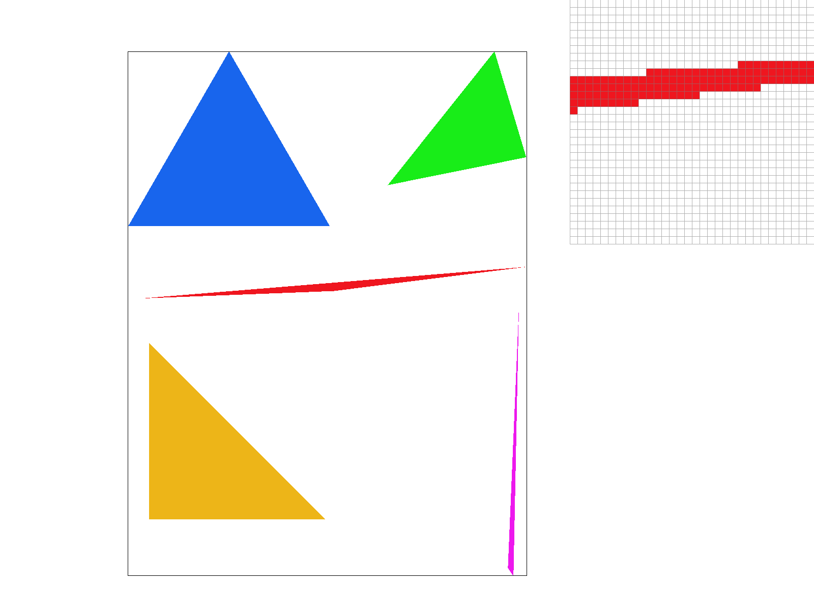
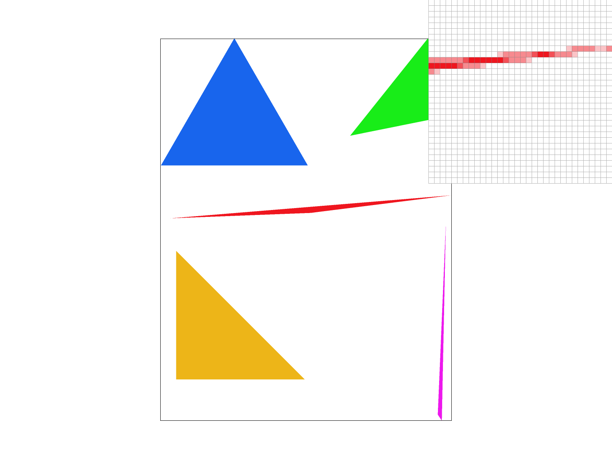
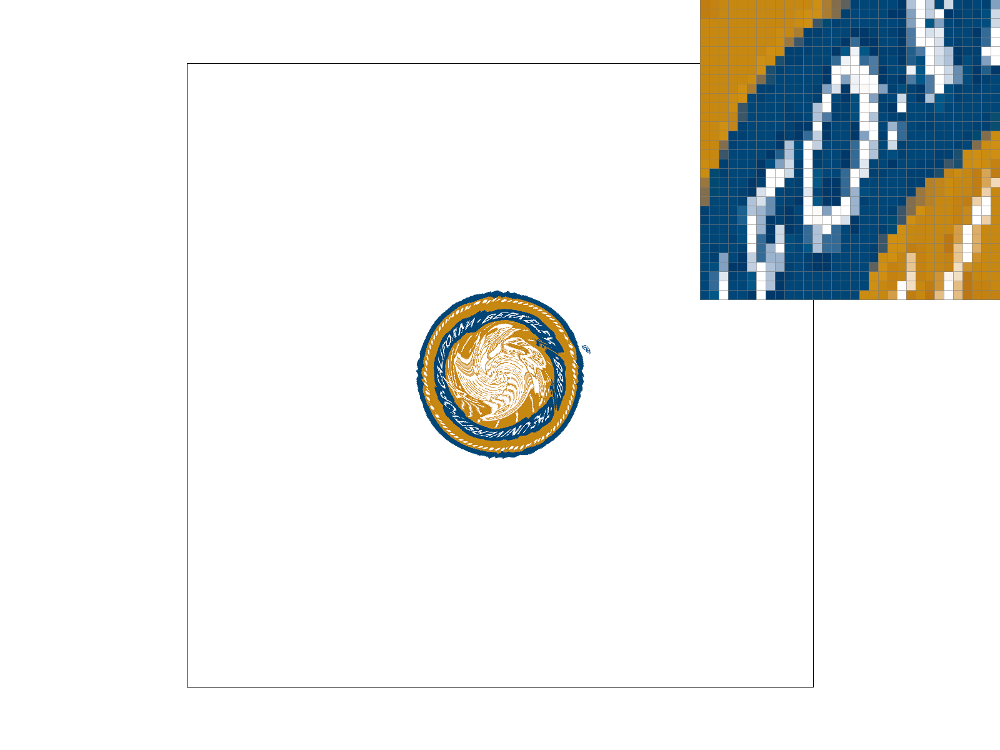
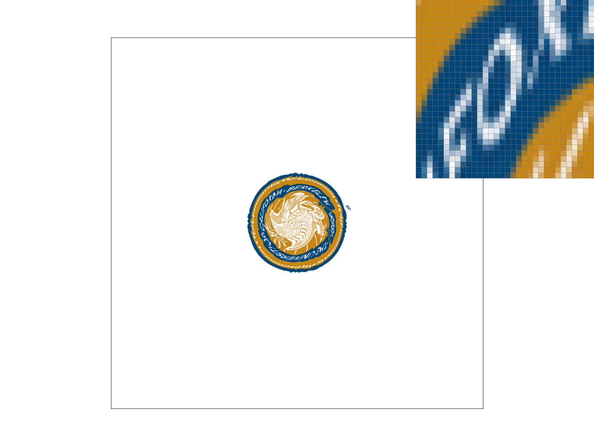
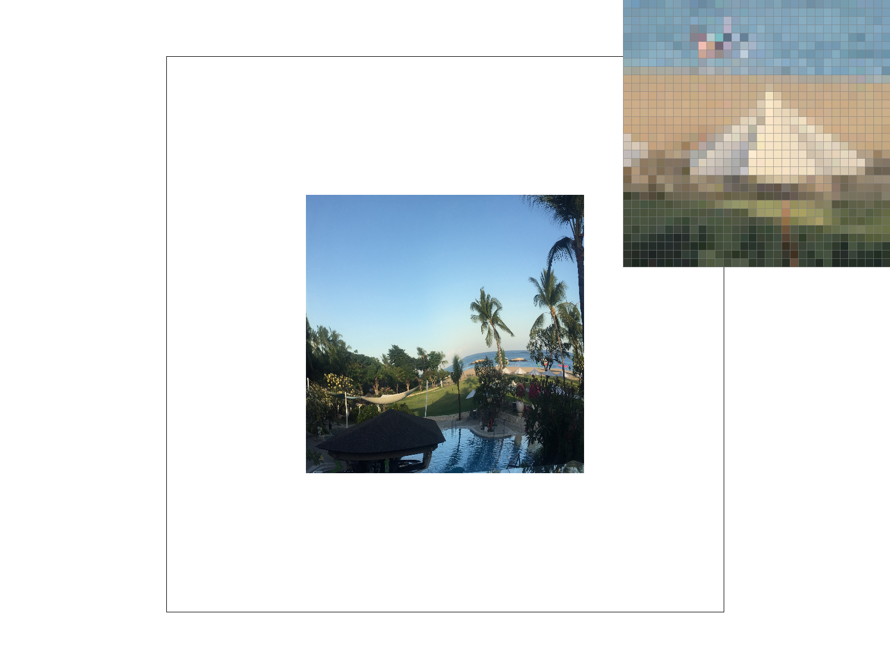

Overview
In this project, I implemented a program with the functions of triangle rasterization, antialiasing, graph transforms, color interpolating and texture mapping. During the completion, I learned how to check if a point is inside the triangle, antialiase using supersampling and then downsampling, interpolate color or map texture using barycentric coordinates, and find correct mipmap level for level sampling.
Section I: Rasterization
Part 1: Rasterizing single-color triangles
To rasterize a triangle, we scan all pixels in the bounding box of the triangle. For each pixel, check a sample point in the center of it. If the point is in the triangle (including boundaries), color the pixel.
My algorithm exactly checks each sample within the bounding box of the triangle. Thus it's no worse than one that does the same thing.
Part 2: Antialiasing triangles
My supersampling algorithm uses a sample buffer other than the frame buffer. The sample buffer actually contains sample_rate pixels corresponding to each one pixel of the frame buffer. This allows us to sample sqrt(sample_rate) * sqrt(sample_rate) locations for one pixel of the frame buffer. After supersampling, the sample buffer then down sampled to the frame buffer using the average color of the sample_rate pixels for each frame pixel. Supersampling can make the edge more blurred and looks smoother, thus can reduce aliasing artifacts. The "supersampling" and "downsampling" processes are added in the beginning and the end of my rasterization pipeline respectively.
|
|

|
|
|
The different results observed is mainly because supersampling blurs the edges and makes them smoother.
Part 3: Transforms
Section II: Sampling
Part 4: Barycentric coordinates
Barycentric coordinates are a method to represent a point inside a triangle using three parameters that add up to 1. Each parameter represents the proportional distance to the side that opposite to the corresponding vertex. We can use the barycentric coordinates to smoothly interpolate color inside the triangle. Take the image below as an example:

In this image, for any point P inside the triangle, we assume that the proportional distances to the side that opposite to the vertices A, B, C of the triangle are p_A, p_B, p_C respectively. Then the barycentric coordinate of P is (p_A, p_B, p_C). Given the color of the vertices c_A, c_B, c_C, we can interpolate the color of P using c_P = p_A * c_A + p_B * c_B + p_C * c_C.
Below is the png screenshot of test7.svg.
Part 5: "Pixel sampling" for texture mapping
Pixel sampling is a method of sampling texture value at a point by considering its surrounding texture sample pixels. In texture mapping, we first get the barycentric coordinate of the target point P in the triangle ABC. Then determine the coordinate of P in the texture space from the coordinates of A, B and C in the texture space as well as the barycentric coordinate. After that, we can use the indicated pixel sampling method to get the color of P.
Two different pixel sampling methods are used in this program. Nearest-pixel sampling determines the color value at a point by finding its nearest texture sample pixel and using that pixel's color. Bilinear sampling determines the color value at a point by taking a weighted average of the four closest texture sample pixels' color. In comparison, bilinear sampling produces smoother texture mapping results.
Below is an example where bilinear sampling clearly defeats nearest sampling.
|

|
|
|
|

|
We can find that the letter "O" in bilinear sampling is much more uniform and smoother than that in nearest sampling at the same sampling rate.
The large difference can occur between the two methods in several conditions. First is when an image is obviously scaled. In these cases, nearest sampling will produce a more "pixelated" image, while bilinear sampling will produce a smoother image. Second is when an image has sharp edges. Nearest sampling will remain the sharp features while bilinear sampling will blur the edges. These are because nearest sampling only considers the nearest pixel, but bilinear sampling mixes the colors of four nearest pixels, resulting in an image with more blended features.
Part 6: "Level sampling" with mipmaps for texture mapping
Level sampling is a method of choosing appropriate mipmap level to sample in order to avoid blurring and aliasing. My program first compute the continuous level number D, and then determine the mipmap level to sample according to D and the level sampling method used.
Pixel sampling is fast and doesn't need extra memory, but it sometimes won't remove aliasing artifacts well in some scaled images. Level sampling is also fast, and it needs some extra memory for mipmap. It generally performs better than pixel sampling in antialiasing but sometimes can cause the image overblurred. Increasing the number of samples per pixel is usually the most powerful in antialiasing, but will spend a lot of time and need large amounts of extra memory.
Below are the four versions of an image using different sampling technique combinations.
|
|

|
|
|
|
link to webpage